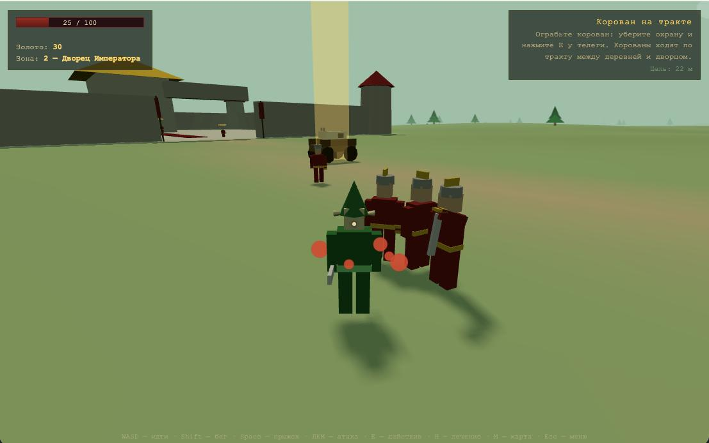
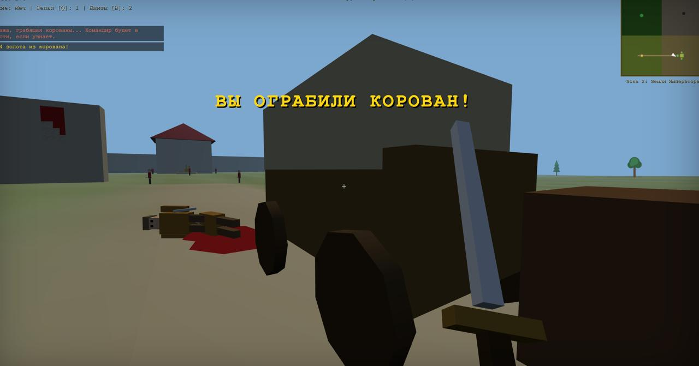

Kimi K3 SOTA Three.js 3D-экшон от 3-го лица: эльфы / охрана дворца / Злой, 4 зоны, густой LOD-лес (картинка → 3D), ездовой корован с коровой, приказы командира и военный стол Злого со штурмом дворца, расчленёнка (рука/глаз/нога), кровотечение, протезы и коляска, лавка и лекарь, карта на M, сохранения.
Fable 5 SOTA Three.js, три фракции, LOD-лес («вдали деревья картинкой»), грабёж корованов, отрубание рук и протезы, 4 зоны, штурм дворца, сохранения. Opus 4.8 Three.js, вид от 1-го лица: эльфы / охрана / злодей, LOD-лес (билборд → 3D вблизи), грабёж корованов, расчленёнка и протезы (рука/глаз/нога/коляска), приказы командира, штурм дворца, лавка как в Daggerfall, сохранения. GPT-5.5 Three.js 3D-экшон: три стороны конфликта, четыре зоны, густой LOD-лес, корованы, дворцовые приказы, старый форт злодея, 3D-враги и трупы, травмы руки/глаза/ноги, протезы, магазин и сохранения. GLM-5.2 Three.js 3D-экшон от 1-го лица: эльфы / охрана дворца / злодей, 4 зоны (люди, дворец, густой лес, горный форт), LOD-лес (билборд → 3D), грабёж корованов, приказы и штурм дворца, расчленёнка (рука/глаз/нога), протезы и коляска, лавка как в Daggerfall, сохранения. GPT-5.6-sol Полированный 3D-экшон от третьего лица: три самостоятельных фракционных сценария, бесшовные четыре земли, LOD-лес, движущийся корован, союзники и приказы, травмы, кровотечение, протезы, торговля, финальные битвы и сохранения. Opus 5 Three.js от 1-го лица: эльфы / охрана дворца / Злой, бесшовные 4 зоны, LOD-лес из 14 000 деревьев (картинка → 3D на 66 м), корованы с флагом на тракте вдоль опушки, отряд по найму и приказ «в атаку», расчленёнка с отлетающими конечностями и 3D-трупами, кровотечение, протезы и коляска, 6 лавок и лекарь, карта с быстрым перемещением, сохранения.